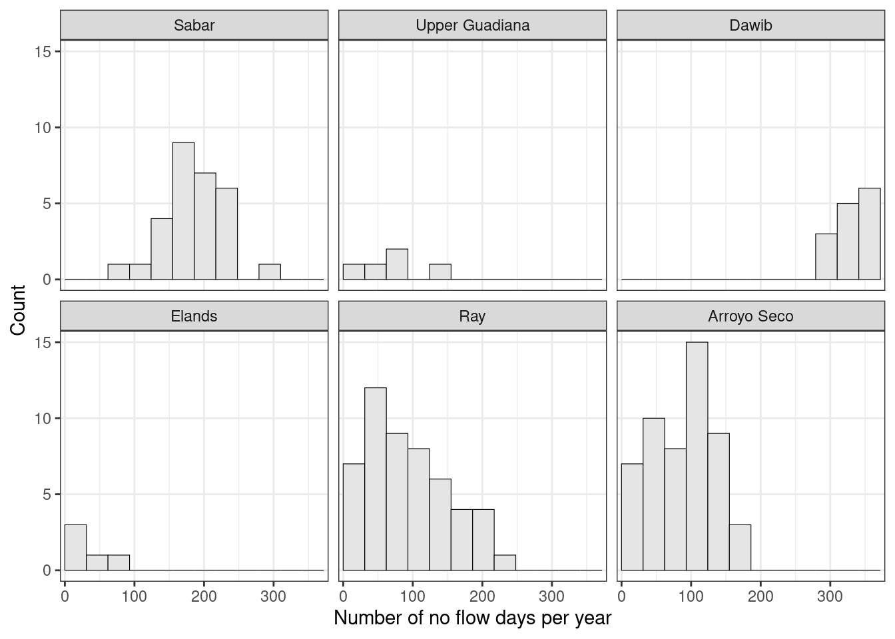
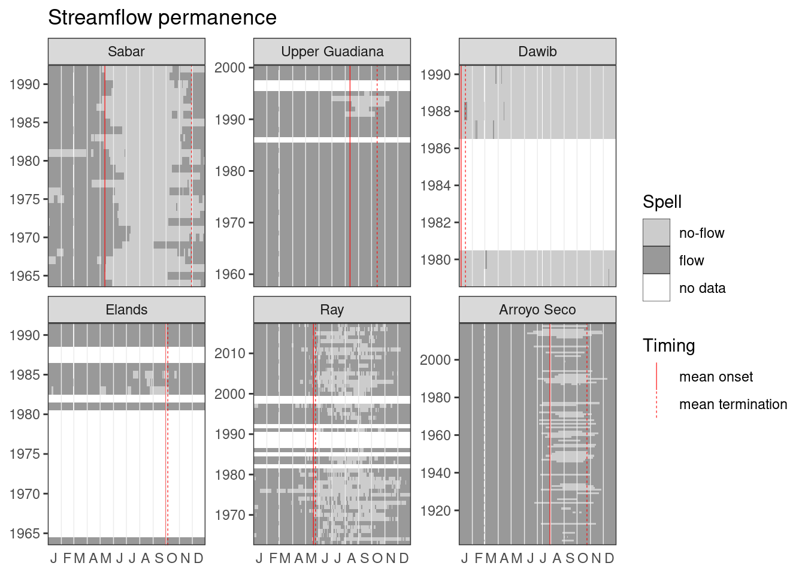

library(hydroDrought)
library(tidyverse)
rivers <- international %>%
select(river, data) Streamflow is on at least 5 days below the threshold of 0.001m3s-1. Removing incomplete first and last years.
intermittent <- rivers %>%
mutate(
is.intermittent = map_lgl(data, ~is_intermittent(.x$time, .x$discharge))
) %>%
filter(is.intermittent) %>%
mutate(
clipped = map(data, remove_incomplete_first_last),
spells = map(clipped, ~ires_metric(.x$time, .x$discharge, na = "drop_year"))
) f <- list("frac nf years" = no_flow_years ,
"MAN" = MAN, "CVAN" = CVAN, "no flow days" = FAN,
"MAMD" = MAMD,
"onset" = tau0, "sd onset" = tau0r, "term." = tauE)
metrics <- intermittent %>%
transmute(
river,
metrics = map(clipped, ~map(f, exec, time = .x$time, flow = .x$discharge))
) %>%
unnest_wider(metrics) %>%
print()## # A tibble: 6 x 9
## river `frac nf years` MAN CVAN `no flow days` MAMD onset `sd onset` term.
## <fct> <dbl> <dbl> <dbl> <list> <dbl> <month-d> <dbl> <month-d>
## 1 Sabar 1 185. 0.239 <int [29]> 168. -05-12 60.0 -11-29
## 2 Upper Guadi… 0.116 65 0.728 <int [5]> 8.12 -08-12 25.8 -10-14
## 3 Dawib 1 361. 0.00830 <int [6]> 298. -01-01 0 -01-27
## 4 Elands 0.214 43.3 0.699 <int [3]> 7.89 -08-22 83.6 -09-04
## 5 Ray 0.945 98.2 0.576 <int [46]> 40.2 -05-14 52.8 -05-20
## 6 Arroyo Seco 0.441 88.5 0.466 <int [52]> 38.3 -07-30 24.7 -10-24metrics %>%
select(river, n.days = `no flow days`) %>%
unnest(n.days) %>%
ggplot(aes(n.days)) +
geom_histogram(binwidth = 31, boundary = 0,
fill = "grey90", col = "black", size = 0.2) +
facet_wrap(vars(river)) +
scale_y_continuous(breaks = breaks_integer()) +
scale_x_continuous(expand = expansion(add = 7)) +
labs(x = "Number of no flow days per year", y = "Count") +
theme_bw() +
theme(panel.grid.minor.y = element_blank())
spells <-intermittent %>%
select(river, spells) %>%
unnest(spells) %>%
mutate(
year = water_year(time),
day = monthDay(time)
)
onoff <- metrics %>%
select(river, "mean onset" = onset, "mean termination" = `term.`) %>%
pivot_longer(-river, names_to = "Timing")
ggplot(spells, aes(monthDay(time), year, fill = state)) +
geom_tile() +
geom_vline(data = onoff, aes(xintercept = value, linetype = Timing),
col = "red", size = 0.2) +
scale_x_month(expand = expansion(), nletters = 1) +
scale_y_continuous(expand = expansion(), breaks = breaks_integer()) +
scale_fill_manual("Spell", values = c("no-flow" = "grey80", "flow" = "grey60",
"no-data" = "NA"),
drop = FALSE) +
labs(title = "Streamflow permanence") +
facet_wrap(vars(river), scales = "free_y") +
guides(fill = guide_legend(override.aes = list(col = 1))) +
theme_bw() +
theme(panel.grid.major = element_blank(),
panel.grid.minor.y = element_blank(),
axis.ticks.x = element_blank(),
panel.ontop = TRUE,
panel.background = element_rect(fill = NA),
axis.title = element_blank())